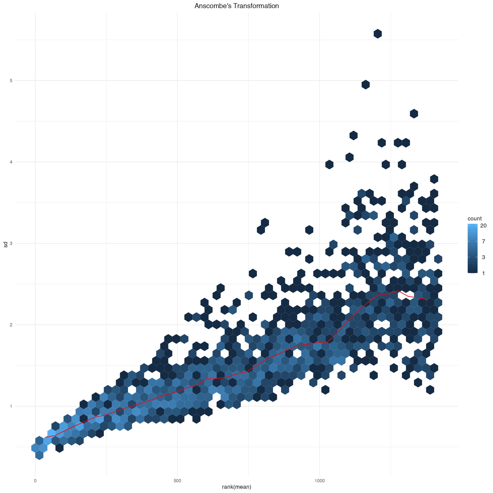
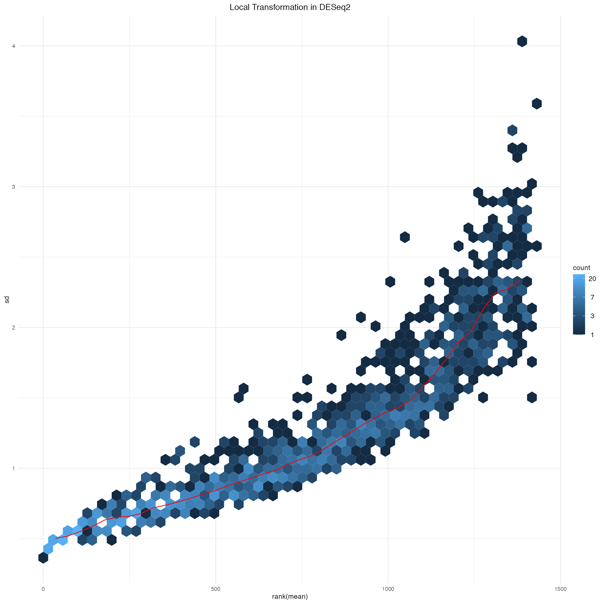
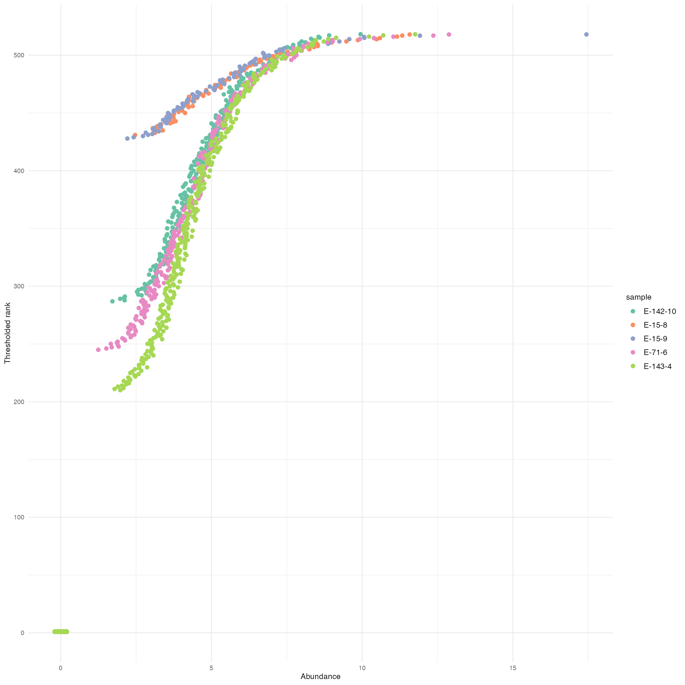
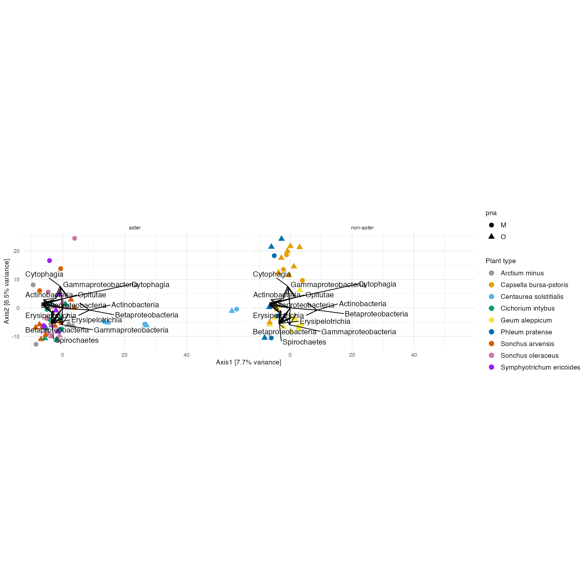

Section 5: TRANSFORMATIONS
Pratheepa Jeganathan
23 February, 2021
05_transformation.Rmd
library(phyloseq)
library(tidyverse)
library(genefilter) #KOverA
library(DESeq2)
library(vsn)
library(ade4) # dudi.pca
library(ggrepel) # geom_text_repel
devtools::load_all()
theme_set(theme_minimal())
theme_update(
text = element_text(size = 10),
legend.text = element_text(size = 10)
)Data
rm(psE)
threshold <- kOverA(2, A = 25)
psE_BARBI <- phyloseq::filter_taxa(psE_BARBI, threshold, TRUE)
psE_BARBI## phyloseq-class experiment-level object
## otu_table() OTU Table: [ 1418 taxa and 86 samples ]
## sample_data() Sample Data: [ 86 samples by 16 sample variables ]
## tax_table() Taxonomy Table: [ 1418 taxa by 6 taxonomic ranks ]
## phy_tree() Phylogenetic Tree: [ 1418 tips and 1417 internal nodes ]
ps <- psE_BARBI
rm(psE_BARBI)
ps <- prune_taxa(taxa_sums(ps) > 0, ps)
ps## phyloseq-class experiment-level object
## otu_table() OTU Table: [ 1418 taxa and 86 samples ]
## sample_data() Sample Data: [ 86 samples by 16 sample variables ]
## tax_table() Taxonomy Table: [ 1418 taxa by 6 taxonomic ranks ]
## phy_tree() Phylogenetic Tree: [ 1418 tips and 1417 internal nodes ]Edit specimen names
We edit specimen names and identify Asteraceae and non-Asteraceae plants.
sam_names <- str_replace(sample_names(ps), "E106", "E-106")
sam_names <- str_replace(sam_names, "_F_filt.fastq.gz", "")
sam_names <- str_replace(sam_names, "Connor-", "E")
sample_names(ps) <- sam_names
sample_data(ps)$X <- sam_names
sample_data(ps)$unique_names <- sam_names
aster <- c("142","143","15","ST","22","40")
non_aster <- c("33", "71", "106")
paired_aster <- c("E-142-1", "E142-1", "E-142-5", "E142-5", "E-142-10", "E142-10", "E-143-2", "E143-2", "E-143-7", "E143-7", "E-15-1", "E15-1", "ST-CAZ-4-R-O", "ST-CAZ-4-R-M", "ST-SAL-22-R-O", "ST-SAL-22-R-M", "ST-TRI-10-R-O", "ST-TRI-10-R-M")
paired_non_aster <- c("E33-7", "E-33-7", "E33-8", "E-33-8", "E33-9", "E-33-9", "E71-10", "E-71-10","E71-2","E-71-2" ,"E71-3", "E-71-3", "E106-1", "E-106-1", "E106-3", "E-106-3", "E106-4", "E-106-4")
paired_specimens <- c(paired_aster, paired_non_aster)5.1 Variance stabilization
This workflow is for visualization of 16S rRNA sequencing data. We use 16S after removing contaminants psE_BARBI. Then, we remove ASVs that have at least 25 reads in five specimens. This data set has 1418 ASVs and 86 samples.
Anscombe’s transformation
The following transformation may take long time so we saved it as ps_ans. We can access it from diffTop package.
ps_ans <- phyloseqTransformation(ps = ps, c = 0.4)
usethis::use_data(ps_ans)DESeq2 transformation
There are three different transformations in DESEq2 package.
We refer to the help page of varianceStabilizingTransformation() for fitType="mean", fitType="parametric", fitType="local".
phyloseqTransformationVST <- function(ps,
fitType = "mean"){
dds <- phyloseq_to_deseq2(ps, design = ~ 1)
dds <- estimateSizeFactors(dds, type = "poscounts")
vsd <- varianceStabilizingTransformation(dds,
blind = FALSE,
fitType = fitType)
abund_temp <- assay(vsd)
ps <- phyloseq(otu_table(abund_temp, taxa_are_rows = TRUE),
sample_data(ps),
tax_table(ps),
phy_tree(ps))
return(ps)
}
ps_ans_deseq2 <- phyloseqTransformationVST(ps, fitType = "mean")
ps_parametric_deseq2 <- phyloseqTransformationVST(ps, fitType = "parametric")
ps_local_deseq2 <- phyloseqTransformationVST(ps, fitType = "local")MSD (mean-standard deviation) plots after each transformation
We use meanSdPlot() in vsn package.
msd_ps_ans <- meanSdPlot(
otu_table(ps_ans) %>%
as.matrix(),
plot = FALSE)
msd_ps_ans$gg +
ggtitle("Anscombe's Transformation") +
theme(plot.title = element_text(hjust = 0.5)) 
msd_ps_ans_deseq2 <- meanSdPlot(
otu_table(ps_ans_deseq2) %>%
as.matrix(),
plot = FALSE)
msd_ps_ans_deseq2$gg +
ggtitle("Anscombe Transformation in DESeq2") +
theme(plot.title = element_text(hjust = 0.5)) 
msd_ps_parametric_deseq2 <- meanSdPlot(
otu_table(ps_parametric_deseq2) %>%
as.matrix(),
plot = FALSE)
msd_ps_parametric_deseq2$gg +
ggtitle("Parametric Transformation in DESeq2") +
theme(plot.title = element_text(hjust = 0.5)) 
msd_ps_local_deseq2 <- meanSdPlot(
otu_table(ps_local_deseq2) %>%
as.matrix(),
plot = FALSE)
msd_ps_local_deseq2$gg +
ggtitle("Local Transformation in DESeq2") +
theme(plot.title = element_text(hjust = 0.5)) 
rm(
ps_ans_deseq2,
ps_parametric_deseq2,
ps_local_deseq2,
msd_ps_ans,
msd_ps_ans_deseq2,
msd_ps_parametric_deseq2,
msd_ps_local_deseq2
)5.2 Rank-based methods
Rank-based transformation
The association between abundances and threshholded ranks, for a few randomly selected samples.
The numbers of the y-axis are those supplied to PCA.
abund <- otu_table(ps_ans)
abund_ranks <- apply(abund, 2, rank)
abund_ranks <- abund_ranks - 900
abund_ranks[abund_ranks < 1] <- 1
abund_df <- reshape2::melt(abund, value.name = "abund") %>%
left_join(reshape2::melt(abund_ranks, value.name = "rank"))
colnames(abund_df) <- c("seq", "sample", "abund", "rank")
sample_ix <- sample(1:nrow(abund_df), 5)
abund_df_subset <- abund_df %>%
filter(sample %in% abund_df$sample[sample_ix])
ggplot(abund_df_subset) +
geom_point(aes(x = abund, y = rank, col = sample),
position = position_jitter(width = 0.2),
size = 2) +
labs(x = "Abundance",
y = "Thresholded rank") +
scale_color_brewer(palette = "Set2") 
Threshold ranks PCA
# We will use 9 colors for 9 different plants
plant_colors <- c("#999999", "#E69F00", "#56B4E9", "#009E73", "#F0E442", "#0072B2", "#D55E00", "#CC79A7", "purple")
abund_ranks <- t(abund_ranks)
ranks_pca <- dudi.pca(
abund_ranks,
scannf = FALSE,
nf = 3)
row_scores <- data.frame(
li = ranks_pca$li,
unique_names = rownames(abund_ranks)
)
col_scores <- data.frame(
co = ranks_pca$co,
seq = colnames(abund_ranks)
)
tax <- tax_table(ps) %>%
data.frame(stringsAsFactors = FALSE)
tax$seq <- rownames(tax)
tax$otu_id <- otu_table(ps) %>%
nrow() %>% seq_len()
sam_df <- sample_data(ps) %>%
data.frame(check.names = FALSE)
row_scores <- row_scores %>%
left_join(
sam_df,
by = "unique_names"
)
col_scores <- col_scores %>%
left_join(
tax,
by = "seq"
)
df_taxa <- col_scores %>%
filter((co.Comp1 > 0.8736221 | co.Comp1 < -0.6) |(co.Comp2 > 0.7 | co.Comp2 < -0.5) & (!is.na(Class)) )
evals_prop <- ranks_pca$eig/sum(ranks_pca$eig)*100
ggplot() +
geom_point(
data = row_scores,
aes(x = li.Axis1,
y = li.Axis2,
col = species_names,
shape = pna),
size = 3) +
scale_colour_manual(
values = plant_colors
) +
facet_grid(~ Type) +
labs(x = sprintf("Axis1 [%s%% variance]",
round(evals_prop[1], 1)),
y = sprintf("Axis2 [%s%% variance]",
round(evals_prop[2], 1)),
col = "Plant type") +
coord_fixed(sqrt(ranks_pca$eig[2] / ranks_pca$eig[1])) +
geom_segment(
data = df_taxa,
aes(x = 0, y = 0,
xend = (co.Comp1*10),
yend = (co.Comp2*10)),
arrow = arrow(),
inherit.aes=FALSE
) +
geom_text_repel(
data = df_taxa,
aes(x = co.Comp1 *10, y = co.Comp2 *10, label = Class)
) 